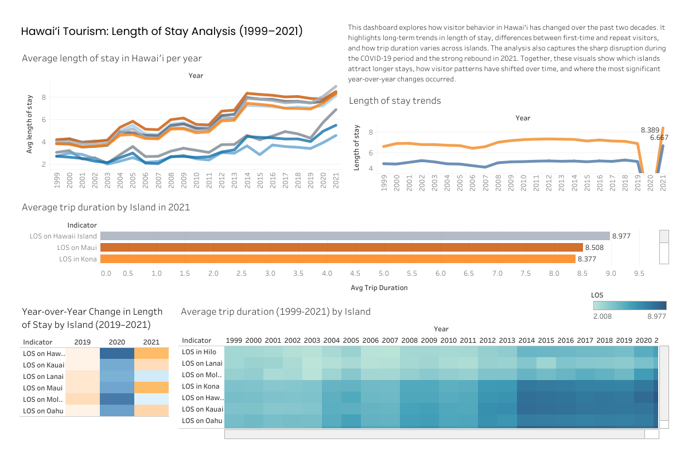
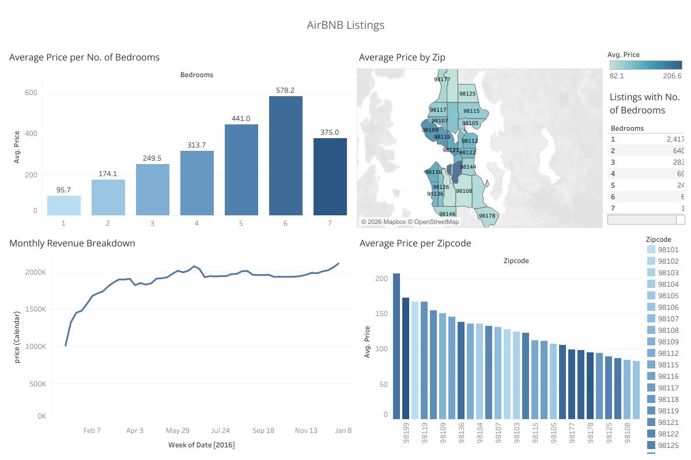
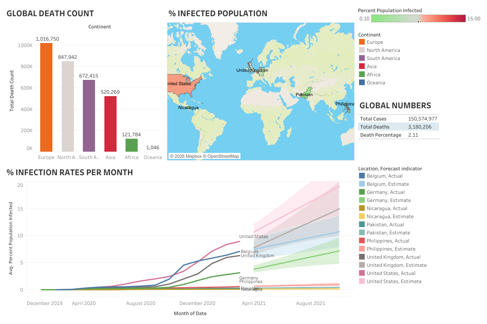
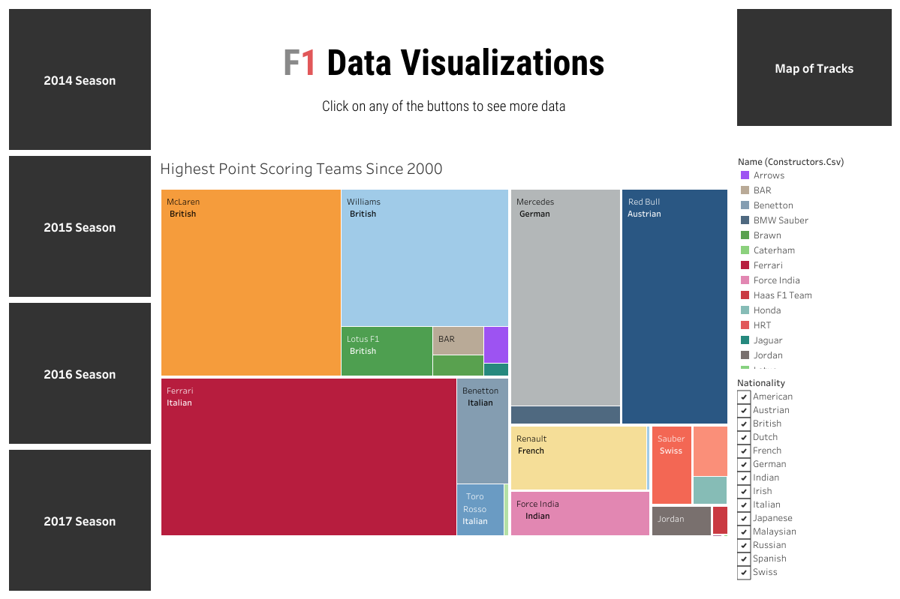

Hawai'i Tourism Length of Stay Analysis
Analyzed 20+ years of Hawai'i tourism data to uncover how visitor length‑of‑stay patterns shifted across islands, visitor types, and major events like COVID‑19. Built a Tableau dashboard highlighting long‑term trends and island‑specific behavior.
SQL • Tableau • Time Series Analysis

Housing Data Cleaning & Transformation
Cleaned and transformed raw housing data in SQL Server to improve analytical usability. Built a Tableau dashboard showing pricing patterns, revenue trends, and geographic variation across ZIP codes.
SQL • Data Cleaning • Tableau

COVID‑19 Global Data Exploration
Explored global COVID‑19 trends using SQL Server, analyzing infection rates, mortality ratios, and regional differences. Visualized global patterns through maps, KPIs, and time‑based charts.
SQL • Data Exploration • Tableau

F1 Data Exploration & Performance Analysis
A SQL and Tableau exploration of F1 qualifying and race performance, combining historical trends with a 2022–2023 Q3 time comparison. Highlights team dominance, track characteristics, and driver performance patterns.
SQL • Sports Analytics • Tableau